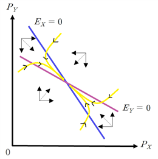
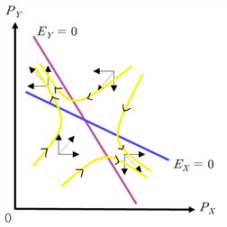
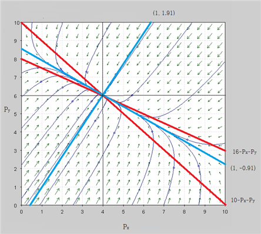
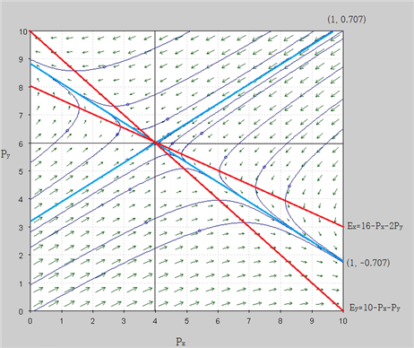

(가정)
수요, 공급이 일치하는 과정은 어느 정도 시간이 걸린다.
시간 t에서 상품가격은 수요-공급 차이(초과수요)의 일정비율(조정계수)을 반영한 형태로 조정된다. 단, 상품가격은 초과수요와 정비례 관계(α > 0)
(모형)
한 상품의 수요, 공급 곡선은 다음의 형태를 하고 있다.
D(t)\,=\,a-bP(t)
S(t)\,=\,c+dP(t) , (a > 0, b > 0, c > 0, d > 0)
\frac{\mathbf{d}\mathbf{P}}{\mathbf{d}\mathbf{t}} = \alpha (\mathbf{D}-\mathbf{S}) , α ; 조정계수(α > 0), 조정의 속도를 결정한다.
(풀이)
본 모형에서 가격의 변화율은 수요, 공급에 대입하면 다음과 같이 표시될 수 있다.
\frac{dP}{dt} = \alpha (a-bP-c-dP)
\frac{dP}{dt} + \alpha (b+d)P= \alpha (a-c)............①
이는 계수가 상수인 1차 선형 비동차 미분방정식이다.
확장된 중첩의 원리에 따라 일반해는 특수해(P_{p})와 여함수(P_{c})의 합으로 구성된다.
계수가 상수이므로 한 특수해는 상수가 가능.
①에 P=k(상수)를 대입하면
\alpha (b+d)k= \alpha (a-c)
∴ P_{p} \,=\,k\,= \frac{a-c}{b+d}
여함수는 동차 미분방정식의 해이므로
\frac{dP}{dt} + \alpha (b+d)P=0
⇒ \frac{1}{P} \frac{dP}{dt} \,=\,- \alpha (b+d)
양변 적분하면
\ln P\,=\,- \alpha (b+d)t\,+\,A_{1} , A_{1}는 상수
P_{c} \,=\,A_{2} e^{- \alpha (b+d)t} , where A_{2} \,=\,e^{A_{1}}
따라서 일반해는 P_{g} \,=\,P_{p} +P_{c}
P(t)=A_{2} e^{- \alpha (b+d)t} \,+ \frac{a-c}{b+d} \,
b, d, α>0 이므로
\lim\limits_{t \to \infty } {P(t)= \frac{a-c}{b+d}} \,= \hat{P}
따라서 가격은 장기적으로 \frac{a-c}{b+d}} 로 수렴한다. \hat{P}를 장기균형가격이라 한다.
한편 수요와 공급이 같아지는 점에서 每期 시장청산(market clearing)이 이루어진다면
\,a-bP\,=\,c+dP
⇒ P\,=\, \frac{a-c}{b} - \frac{d}{b} P
⇒ P*\,=\, \frac{a-c}{b+d}
P*는 매기 시장청산이 일어날 때의 가격이므로 단기균형가격(short-run equilibrium price)이라 한다.
\hat{P} \,=\, \frac{a-c}{b+d} \,=P*
따라서 장기균형가격(long-run equilibrium price)은 점차 단기균형가격에 수렴함을 알 수 있다.[77]
P(t)=Ae^{- \alpha (b+d)t} \,+ \frac{a-c}{b+d} \, 에서
\alpha >0,\;b>0,\;d>0 이므로 가격은 장기적으로 안정적이고 P*\,=\, \frac{a-c}{b+d} \,로 수렴한다.
만약 b<0 (또는 d<0) 라면, 즉 수요곡선이 우상향하는 형태라면(또는 공급곡선이 우하항하는 형태라면)
(i) b+d>0 ⇒ b>-d
\lim\limits_{t \to \infty } {P(t)= \frac{a-c}{b+d}} =P*
해는 안정적임을 알 수 있다.
(ii) b+d<0 ⇒ b<-d
\lim\limits_{t \to \infty } {P(t)=} \infty
즉 수요곡선과 공급곡선의 기울기의 부호가 같더라도 기울기의 절대값을 비교했을 때 안정적이 될 수도 있음을 의미. [78]
이상에서 본 바와 같이 해가 항상 안정적이라는 보장이 없다. 기울기에 따라 해가 불안정해질 수도 있다는 점은 경제학적으로 시사하는 바가 크다. 경제원론에서 배운바 수요와 공급의 법칙에 따라 자동적으로 균형가격에 접근한다는 이론은 수요곡선과 공급곡선의 기울기에 따라 균형가격에 수렴하지 않고 발산할 수도 있다는 점을 시사한다.
시장의 수요, 공급은 상품가격은 물론 가격추세(price trend)에 영향을 받는다.
국제곡물시장의 곡물가격은 현재가격은 물론 흉작이냐 풍작이냐에 따른 가격전망, 가격추세 등을 고려하여 결정
(모형)
D \,=\,Q_{d}(P(t),\,P ' (t),\,P '' (t))
S\,=\,Q_{s} (P(t),\,P ' (t),\,P '' (t))
D(t)\,=\,a-b_{1} P(t)+b_{2} P ' (t)+b_{3} P '' (t)
S(t)\,=\,c+d_{1} P(t)+d_{2} P'(t)+d_{3} P''(t)
(가정)
곡물가격의 수요, 공급은 가격, 가격변화율, 가격변화율의 움직임을 고려하여 결정
매기 수요, 공급이 일치하는 시장청산이 일어남
(풀이)
D(t)=S(t) 에서
\,a-b_{1} P(t)+b_{2} P ' (t)+b_{3} P '' (t)=\,c+d_{1} P(t)+d_{2} P ' (t)+d_{3} P '' (t)
이를 정리하면
\,a-b_{1} P(t)+b_{2} P ' (t)+b_{3} P '' (t)=\,c+d_{1} P(t)+d_{2} P ' (t)+d_{3} P '' (t)
\,a-c-(b_{1} +d_{1} )P(t)+(b_{2} -d_{2} )P ' (t)+(b_{3} -d_{3} )P '' (t)=\,0
\, \frac{b_{1} +d_{1}}{b_{3} -d_{3}} P(t)+ \frac{b_{2} -d_{2}}{b_{3} -d_{3}} P ' (t)+P '' (t)=\,c-a
장기균형이기 위해 시간에 따른 변화가 없어야 하므로(P ' =P '' =0)
\, \frac{b_{1} +d_{1}}{b_{3} -d_{3}} P*=\,c-a
P*\,=\, \frac{(c-a)(b_{3} +d_{3} )}{b_{1} +d_{1}}
P* 값이 상수이므로 stationary 균형값을 갖는다.
특성방정식은
\, \frac{b_{1} +d_{1}}{b_{3} -d_{3}} + \frac{b_{2} -d_{2}}{b_{3} -d_{3}} r+r^{2} =\,0
r_{1} ,\,r_{2} 가 실근이고 0보다 작다면 단조 수렴
r_{1} ,\,r_{2} 가 실근이고 0보다 크면 단조 발산
P(t)\,=\,A_{1} e^{r_{1} t} +A_{2} e^{r_{2} t} +\frac{(c-a)(b_{3} +d_{3} )}{b_{1} +d_{1}}
r_{1} ,\,r_{2} 가 허근이고 실수부분이 0보다 작다면 곡물가격은 사인파형으로 움직이면서 균형가격에 수렴해 간다.
r_{1} ,\,r_{2} 가 허근이고 실수부분이 0보다 크면 곡물가격은 사인파형으로 움직이면서 균형가격에서 멀어져 간다.
P(t)=\, \frac{(c-a)(b_{3} +d_{3} )}{b_{1} +d_{1}}+e^{ct} (C_{1} \cos (dt)+C_{2} \sin (dt))
(모형)
x, y 는 총보완재(gross complement)
D_{\scriptscriptstyle {X}} (t)\,=\,a_{\scriptscriptstyle {X}} -b_{\scriptscriptstyle {X}} P_{\scriptscriptstyle {X}} (t)-k_{\scriptscriptstyle {X}} P_{\scriptscriptstyle {Y}} (t)
S_{\scriptscriptstyle {X}} (t)\,=\,c_{\scriptscriptstyle {X}} +d_{\scriptscriptstyle {X}} P_{\scriptscriptstyle {X}} (t)
\frac{\mathbf{d}\mathbf{P}_{\scriptscriptstyle {\mathbf{X}}}}{\mathbf{d}\mathbf{t}} =\mathbf{E}_{\scriptscriptstyle {\mathbf{X}}} (\mathbf{P})\,=\mathbf{D}_{\scriptscriptstyle {\mathbf{X}}} -\mathbf{S}_{\scriptscriptstyle {\mathbf{X}}}
D_{\scriptscriptstyle {Y}} (t)\,=\,a_{\scriptscriptstyle {Y}} -b_{\scriptscriptstyle {Y}} P_{\scriptscriptstyle {Y}} (t)-k_{\scriptscriptstyle {Y}} P_{\scriptscriptstyle {X}} (t)
S_{\scriptscriptstyle {Y}} (t)\,=\,c_{\scriptscriptstyle {Y}} +d_{\scriptscriptstyle {Y}} P_{\scriptscriptstyle {Y}} (t)
\frac{\mathbf{d}\mathbf{P}_{\scriptscriptstyle {\mathbf{Y}}}}{\mathbf{d}\mathbf{t}} =\mathbf{E}_{\scriptscriptstyle {\mathbf{Y}}} (\mathbf{P})\,=\mathbf{D}_{\scriptscriptstyle {\mathbf{Y}}} -\mathbf{S}_{\scriptscriptstyle {\mathbf{Y}}}
where a_{\scriptscriptstyle {X}} \,,\,b_{\scriptscriptstyle {X}} \,,\,c_{\scriptscriptstyle {X}} \,,\,d_{\scriptscriptstyle {X}} \,,\,a_{\scriptscriptstyle {Y}} \,,\,b_{\scriptscriptstyle {Y}} \,,\,c_{\scriptscriptstyle {Y}} \,,\,d_{\scriptscriptstyle {Y}} \,,\,k_{\scriptscriptstyle {X}} \,,\,k_{\scriptscriptstyle {Y}} \,>0
위 식을 정리하면 다음의 연립미분방정식을 얻는다.
\frac{dP_{\scriptscriptstyle {X}}}{dt} =\,a_{\scriptscriptstyle {X}} -\,c_{\scriptscriptstyle {X}} -(b_{\scriptscriptstyle {X}} +d_{\scriptscriptstyle {X}} )P_{\scriptscriptstyle {X}} -k_{\scriptscriptstyle {X}} P_{\scriptscriptstyle {Y}}
\frac{dP_{\scriptscriptstyle {Y}}}{dt} =\,a_{\scriptscriptstyle {Y}} -\,c_{\scriptscriptstyle {Y}} -(b_{\scriptscriptstyle {Y}} +d_{\scriptscriptstyle {Y}} )P_{\scriptscriptstyle {Y}} -k_{\scriptscriptstyle {Y}} P_{\scriptscriptstyle {X}}
균형점에서 \frac{dP_{\scriptscriptstyle {X}}}{dt} = \frac{dP_{\scriptscriptstyle {Y}}}{dt} =\,0
E_{\scriptscriptstyle {X}} (P)=\,a_{\scriptscriptstyle {X}} -\,c_{\scriptscriptstyle {X}} -(b_{\scriptscriptstyle {X}} +d_{\scriptscriptstyle {X}} )P_{\scriptscriptstyle {X}} -k_{\scriptscriptstyle {X}} P_{\scriptscriptstyle {Y}} \,=\,0
E_{\scriptscriptstyle {Y}} (P)=\,a_{\scriptscriptstyle {Y}} -\,c_{\scriptscriptstyle {Y}} -(b_{\scriptscriptstyle {Y}} +d_{\scriptscriptstyle {Y}} )P_{\scriptscriptstyle {Y}} -k_{\scriptscriptstyle {Y}} P_{\scriptscriptstyle {X}} \,=\,0
\,b_{\scriptscriptstyle {X}} \,,\;d_{\scriptscriptstyle {X}} \,,\;b_{\scriptscriptstyle {Y}} \,,\;d_{\scriptscriptstyle {Y}} \,,\,k_{\scriptscriptstyle {X}} \,,\,k_{\scriptscriptstyle {Y}} \,에 따라 위상도는 두 가지 경우로 나눠진다.[79]


(i) 안정적인 경우
(그림 a)에서 파란선(E_{\scriptscriptstyle {X}} \,=\,0)은 제품 x의 초과수요가 0인 점들의 집합이다. 제품 x 는 제품 y의 총보완재이므로 E_{\scriptscriptstyle {X}} \,=\,0 곡선은 우하향한다.
점들이 파란선 좌하에 있을 때 초과수요의 부등호는 다음과 같다. 초과수요가 陽(+)인 경우
E_{\scriptscriptstyle {X}} (P)=\,a_{\scriptscriptstyle {X}} -\,c_{\scriptscriptstyle {X}} -(b_{\scriptscriptstyle {X}} +d_{\scriptscriptstyle {X}} )P_{\scriptscriptstyle {X}} -k_{\scriptscriptstyle {X}} P_{\scriptscriptstyle {Y}} \,>\,0
⇒ \,a_{\scriptscriptstyle {X}} -\,c_{\scriptscriptstyle {X}} >(b_{\scriptscriptstyle {X}} +d_{\scriptscriptstyle {X}} )P_{\scriptscriptstyle {X}} +k_{\scriptscriptstyle {X}} P_{\scriptscriptstyle {Y}} \,
따라서 초과수요가 0 이상인 점들은 파란선 좌하에 있는 점들이다.
E_{\scriptscriptstyle {X}} (P_{\scriptscriptstyle {X}} )>0\; \rightarrow \;D_{\scriptscriptstyle {X}} (P_{\scriptscriptstyle {X}} ) \geq S_{\scriptscriptstyle {X}} (P_{\scriptscriptstyle {X}} )\; \rightarrow \; \frac{dP_{\scriptscriptstyle {X}}}{dt} \, \geq 0
따라서 상태가 파란선 좌하에 있는 경우 시간이 지남에 따라 가격은 오른다.
파란선 우상에 있는 점들은 초과수요가 0 이하인 점들이고 시간이 지남에 따라 가격은 내린다. 제품 y의 빨간선(E_{\scriptscriptstyle {Y}} \,=\,0)도 마찬가지로 해석된다.
이들을 종합하면 (그림 a), (그림 b)와 같은 방향벡터가 그려진다.
(그림 a)는 안정적임을, (그림 b)는 불안정함(안장경로)을 보여준다. 그림으로부터 초과수요함수의 상대적인 기울기가 해의 안정성 여부를 판단하는 기준이 됨을 알 수 있다. 이는 단일상품 시장의 경우 수요와 공급의 절대적인 기울기에 따라 수렴과 발산이 판정되는 경우와 유사하다. 이는 물론 수요, 공급 곡선이 선형함수임에 기인한다.
이상에서 본 바와 같이 해가 항상 안정적이라는 보장이 없다. 기울기에 따라 해가 불안정해질 수도 있다는 점은 경제학적으로 시사하는 바가 크다. 경제원론에서 배운바와 같이 수요와 공급의 법칙에 따라 자동적으로 균형가격에 접근한다는 이론은 수요곡선과 공급곡선의 기울기, 관련된 다른 상품과의 상호작용에 따라 균형가격에 수렴하지 않고 발산할 수도 있다는 점을 시사한다. 균형가격이 안정적이지 않고 불안정적인 경우 그 원인으로 외부효과(수요곡선 우상향), 규모의 경제(공급곡선 우하향), 소득효과 등에 기인한다.
예)
(a)
E_{\scriptscriptstyle {X}} \,=\,10-P_{\scriptscriptstyle {X}} \,-\,P_{\scriptscriptstyle {Y}}
E_{\scriptscriptstyle {Y}} \,=\,16-P_{\scriptscriptstyle {X}} \,-\,2P_{\scriptscriptstyle {Y}}
(b)
E_{\scriptscriptstyle {X}} \,=\,16-P_{\scriptscriptstyle {X}} \,-\,2P_{\scriptscriptstyle {Y}}
E_{\scriptscriptstyle {Y}} \,=\,10-P_{\scriptscriptstyle {X}} \,-\,P_{\scriptscriptstyle {Y}}
(풀이)
(a)
E_{\scriptscriptstyle {X}} \,=\,E_{\scriptscriptstyle {Y}} 인 (4, 6)이 균형점이다.
고유치와 고유벡터를 구하면 다음과 같다.
A = {\begin{pmatrix}\,-1 & \,-1 \\ -1 & \,-2\end{pmatrix}}
고유치는
\phi ( \lambda )= \lambda^{2} +3 \lambda +1\,=\,0
\lambda \,=\, \frac{-3\pm 2 \sqrt {2}}{2} \,<0
두 근이 실근이고 모두 0보다 작으므로 해는 안정적이다.
고유벡터는
\lambda_{1} \,=\, \frac{-3+2 \sqrt {2}}{2} 일 때 {\begin{pmatrix}1 \\ -0.91\end{pmatrix}}
\lambda_{2} \,=\, \frac{-3-2 \sqrt {2}}{2} 일 때 {\begin{pmatrix}1 \\ 1.91\end{pmatrix}}
상변화도는 아래 그림과 같다.

(b)
E_{\scriptscriptstyle {X}} \,=\,E_{\scriptscriptstyle {Y}} 인 (4, 6)이 균형점이다.
고유치와 고유벡터를 구하면 다음과 같다.
A = {\begin{pmatrix}\,-1 & \,-2 \\ -1 & \,-1\end{pmatrix}}
고유치는
\phi ( \lambda )= \lambda^{2} +2 \lambda -1\,=\,0
\lambda_{1} \,=\,-1+ \sqrt {2} \,>0 , \lambda_{2} \,=\,-1- \sqrt {2} \,<0
한 근이 0보다 작으므로 해는 불안정적이다. 두근의 부호가 다르므로 균형점은 안장경로이다.
고유벡터는
\lambda_{1} \,=\,-1+ \sqrt {2} \, 일 때 {\begin{pmatrix}1 \\ -0.707\end{pmatrix}}
\lambda_{2} \,=\,-1- \sqrt {2} \, 일 때 {\begin{pmatrix}1 \\ 0.707\end{pmatrix}}
상변화도는 아래 그림과 같다.

(풀이끝)
단기균형가격과 장기균형가격이 항상 일치하는 것이 아님. 이 모형의 경우에만 해당됨.
↩앞의 위상도 그림에서 (a), (b)의 경우가 해당된다. 그림에서 위상선은 비선형형태의 일반적인 형태를 띄고 있지만 교차점에서의 기울기로 수렴, 발산을 판정할 수 있다?
↩위상도의 자세한 설명은 ‘미분방정식 위상도’ 참조
↩← Predator–Prey와 Goodwin 모형 · 절별 목차 · Domar·Harrod–Domar 성장모형 →